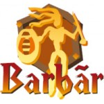
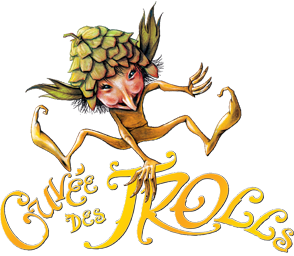
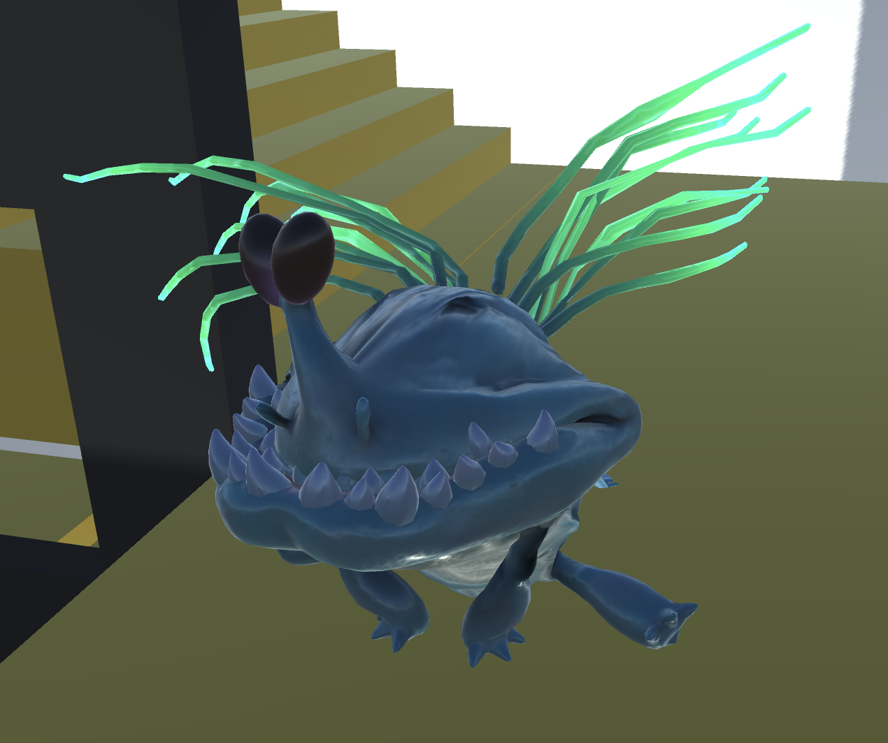
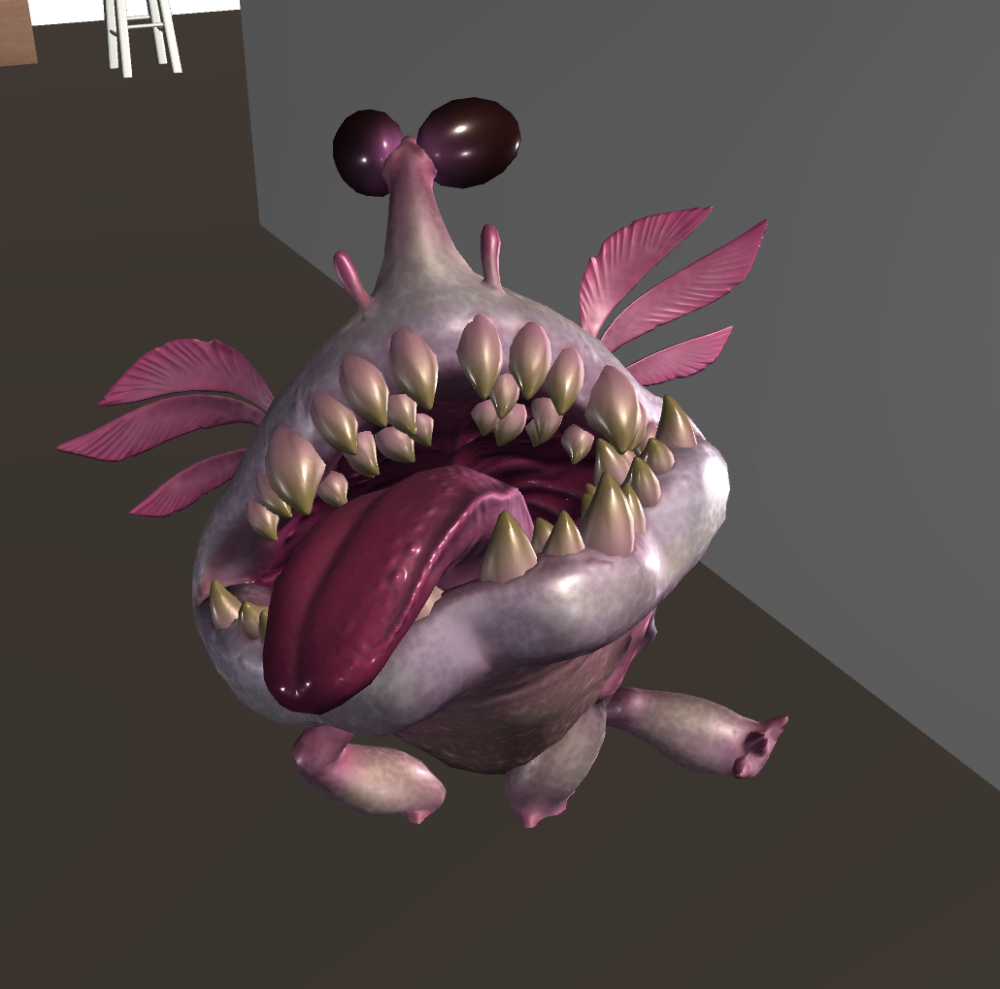
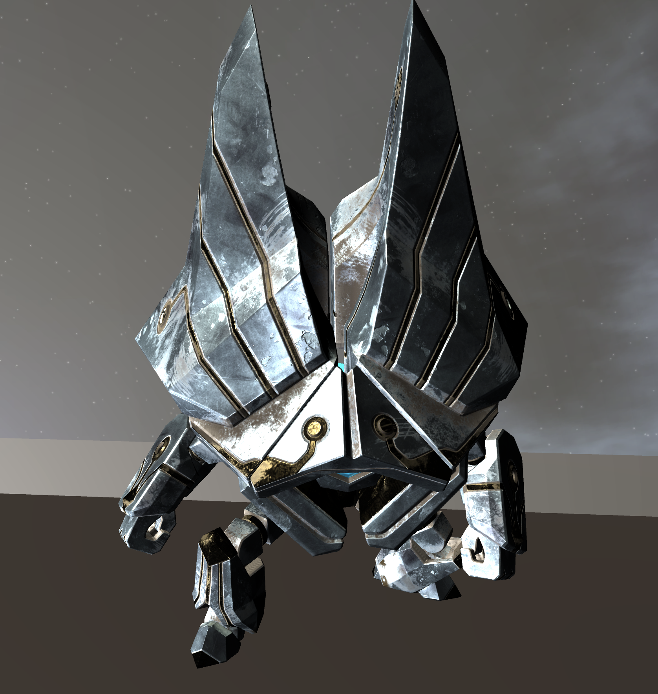

Renseignements de mission
Hyper Top-Secret
Archives de l'UTC
Nous sommes en l'an 121212. Au cours des derniers millénaires, les progrès technologiques fulgurants (plus que pour l'hoverboard) ont permis à l'humanité d'explorer de lointaines contrées spatiales et d'entrer en contact avec de nouvelles formes de vies. Suite à ces expéditions et rencontres, une nouvelle organisation interplanétaire a vu le jour : l'Union Technologique Cosmique (UTC). Aujourd'hui encore, de nombreux vaisseaux de l'UTC continuent à explorer l'infini et au-delà avec à leurs bords de nombreuses équipes scientifiques ou d'intervention. L'escouade Penguin, nom de code SI28, réunit les plus brillants, intrépides mais aussi fous membres de l'UTC. C'est toi, Sherif de l'Espace, qui a été sélectionné pour rejoindre leur effectif. La mission ePic-Project sera ton baptême du feu en temps que membre de l'escouade Penguin.
Ordre de mission
Dans une galaxie lointaine, un appel au secours retentit. Il s'agit du vaisseau de classe FX "Picasso". Les premiers diagnostics indiquent une avarie au générateur principal suite à la disparition des 5 fûts, sources de carburant. Ce sabotage est l'oeuvre du machiavélique Hacheyi. La priorité n'est pas sa neutralisation mais la réparation du vaisseau et le sauvetage de son équipage. Pour cela, retrouve les 5 fûts afin de relancer le générateur dans la salle des machines.
Bonne chance jeune Utcéen, le destin du Pic repose sur tes épaules!
Technologies à disposition
Promène-toi dans le Pic en vue à la première personne à travers la visière connectée de ton casque pour en explorer les moindres recoins ! Un HUD intelligent (affichage tête haute pour les non-linguistes et les non-adeptes des acronymes) incorporé à la visière vous indiquera les différentes interractions possibles que ce soit avec des ptits aliens ou des objets pas vivants du tout. Tu disposeras d'un inventaire du tout dernier cri afin de toujours savoir ce que tu as en poche. Tu pourras bien évidemment ragequit à tout moment grâce à un mirobolant (ça veut dire kwa?) menu si tu trouves que la mission est trop dure ou si ta maman t'appelle pour mettre la table. N'hésite pas à mettre le son pour combler tes oreilles et mieux t'immerger avec une zolie musique d'ambiance. Nous te conseillons également de mettre la meilleure résolution possible même si ça fait tousser le processeur de ton armure. Tu pourras de toute façon changer les réglages de sons et de vidéo à partir du menu de ton casque.
Contrôles
Cet été, le FabLab a sorti sa nouvelle collection de combinaisons spatiales. Ces armures dernier cri possèdent un systême de commande cybernétique très intuitif. Le Centre d'Innovation propose également l'option visière multicolore (compatible avec le HUD utilisé par l'UTC) sur le modèle Comet, modèle le plus à la mode actuellement.
| Touche | Fonction |
|---|---|
| ↑ | Se déplacer en avant |
| ↓ | Se déplacer en arrière |
| → | Se déplacer sur la droite |
| ← | Se déplacer sur la gauche |
| Space | Sauter |
| TrackPad | Déplacer la caméra |
| Click | Clicker |
| E | Faire une action |
| I | Afficher l'inventaire |
| Esc | Afficher le menu |
Carburants
Les nouveaux réacteurs TYP-JP sont compatibles avec de nombreux types de carburants. Cette compatibilité permet de mettre à profit les spécificités de chacun de ses caburants selon les situations et besoins. Rappelons tout de même que ces carburants composés à 90% d'H2O sont tout à fait potables pour l'Homme ainsi que pour la plupart des espèces extra-terrestres.
| Logo | Carburant | Caractéristique |
|---|---|---|
 |
Fut de Barbar Bok | Malgré des performances plus faibles, son prix imbattable le rend très populaire. |
 |
Fut de Delirium Tremens | Très polyvalent, ce carburant reste le premier choix pour les capitaines de vaisseaux en situtation normale. |
|  | Fut de Barbar Blonde | Puissant et brutal. Ce sont les deux qualificatifs employés par les ingénieurs-moteur à son propos. |
 |
Fut de Val Dieu | Les générateurs utilisant ce carburant tendent à avoir une durée de vie plus longue. |
|  | Fut de Cuvée des Trolls | Une faible émanation thermique et sonore est l'atout de ce carburant très prisé pour les approches furtives. |
Bestiaire
La découverte d'autres espèces a eu des conséquences folles sur les moeurs humaines. Pendant que certains les étudiaient, d'autres faisaient ami-ami avec eux (et plus si affinité). Une douane spatiale a du être mise en place pour ne pas laisser entrer sur le territoire terrien des substances telles que la poudre de Kaminos. Une police inter-planétaire fut créée pour réguler les routes sidérales. Une alliance militaitre fut également formée pour combattre toute forme d'aggressions, elle a notamment contribué à démanteler le groupe terroriste radical "Pluto is a planet". Le mariage pour tous fut repensé. De nouvelles normes d'accès ont été réfléchies pour l'accès aux infrastructures. C'est dans cette lignée que l'UTC a recruté parmi pas moins de 12 espèces pour constituer ses équipes scientifiques.
| Apparence | Espèce | Description |
|---|---|---|
|  | Hungarok | Venu tout droit de Kaminos, cette espèce est surnommée Vomito par les humains du à ces crachats verdâtre, son mécanisme de défense. Ses ailes ne lui permettent que de flotter au-dessus de sol mais , tel un poulet obèse, en aucun cas de s'envoler. |
|  | Zeta Reticulien | Pataude et lourdaude, cette espèce a longtemps été confondu avec les super colverts, confusion qui a disparu au vu de leur machoire menaçante. Il est recommandé d'éviter de leur confier des secrets car ils ont la langue bien pendue. |
|  | Gearpersonae | Créée de toutes pièces par les Exharques, cette espèce en a sous le capot. Ces IAs extrêmement avancées bénéficient d'une carlingue rutilante qui en reflétant la lumière leur donne cet aspect si mirobolant. |
Terminal pour le Domaine
Le Domaine est une xeno-technologie qui donnent des maux de crâne aux têtes d'ampoules de l'UTC. Leurs études n'ont pour le moment réussi qu'à déterminer qu'il s'agissait d'une gigantesque (cmb) conscience matricielle basique créée par les Exharques. La caste des Biotechniciens s'accorde pour dire que les Exharques étaient une espèce extrêment avancée mais désormais éteinte suite à une épidémie de rhume sidéral. La dernière expédition de l'YTC (faute de frappe ou branche secrète commando de l'UTC) sur la planète MT90, un artefact Exharque. Cet artefact se révéla être un terminal pour communiquer avec le Domaine à l'aide de codes runiques utilisés par les Exharques encore indéchriffables à l'heure qu'il est (surtout qu'il est midi et que je commence à avoir faim).